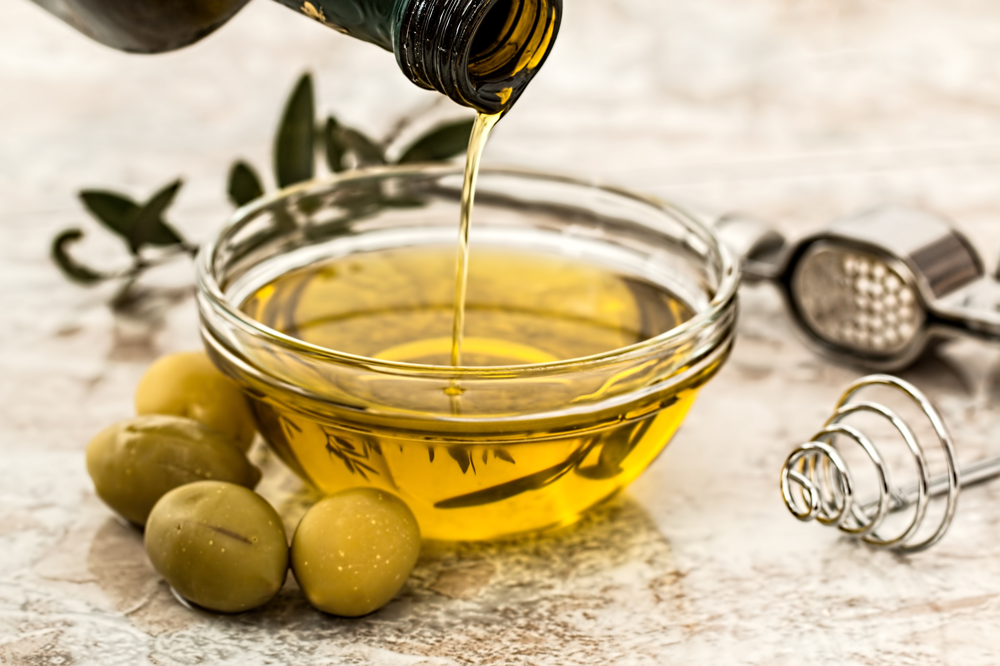

정제한 올리브유는 발화점이 낮아 등불을 밝히는 용도로도 쓰였는데 생산량이 적어 상당한 고가의 귀중품으로 간주되었다. 한밤중에 집을 지키기 위해 켜놓은 수많은 올리브유 등불은 부자의 상징이기도 하였는데 올리브 기름을 구하기 어려운 일반 서민들은 결혼식과 같은 특별한 행사 전날 밤에 등불을 켜기 위한 용도가 일반적이었다.
의식, 예식용으로도 사용되었다. 구약성경에서는 '기름 부음을 받은 자(메시아)'란 말이 '왕위계승권을 획득한 자'와 동의어로 나오는데 여기서 말하는 기름이 바로 올리브 기름이다. 실제로 다윗은 몸에 기름을 붓는 의식을 거행한 직후부터 사울에게 끝없이 살해 위협을 받았다. 신약성경에도 '올리브 기름을 준비해 놨다' 란 말을 '귀중한 예식을 앞두고 있다'와 동의어로 쓰는 부분이 있다. 또한 한국에서의 들기름과 마찬가지로 전통적으로 지중해 지방에서는 가구 등 목제품에 광을 내거나 색깔을 입히기 위한 목적으로도 사용되었다. 옻칠을 발전시키지 못한 지역 특성상 가구에 검은색을 입히고 싶을때는 먼저 올리브유를 바른 다음 목재를 불로 그을려서 색깔을 내며, 그 후 올리브유를 다시 발라 광을 내는 식이다. 현재도 목제품을 관리할 때 종종 사용되며, 먼지가 앉아서 광을 잃은 목제품을 올리브유를 살짝 묻힌 솜이나 헝겊으로 문질러주면 다시 광이 살아난다. 그러나 가구에 바르고 시간이 지나면 기름이 산패되어 쩐내가 나므로, 지금은 가구 전용으로 나온 좋은 기름들이 있어서 거의 쓰지 않는다.